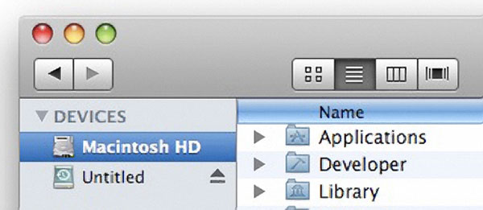

I don't want the apple logo or the OS X logo, you know those buttons in the top left on a mac? I just want one of those but recolored silver and compatible with classic shell. Thanks!
Edit: I want it sort of like this, just the top buttons lined up and desaturised, no color.
